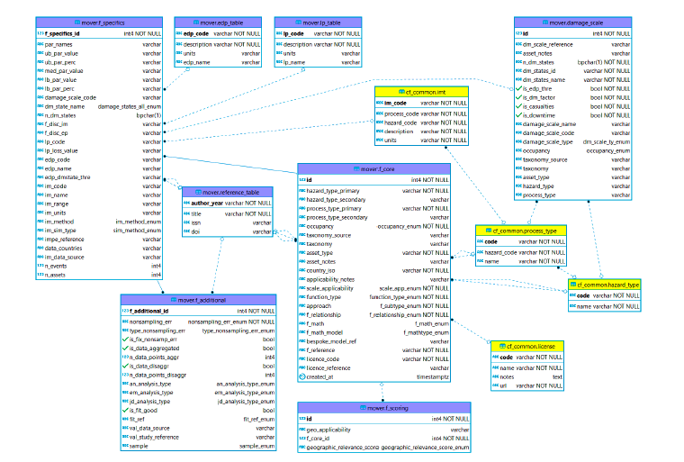

Vulnerability DB schema
The vulnerability schema includes physical fragility and vulnerability relationships (single and multi-hazard curves) and will be extended to include socioeconomic indicators and indexes. The schema distinguishes key information describing the function, including: - function type (i.e fragility, vulnerability, damage-to-loss); - development approach (empirical, analytical, judgement, hybrid, code-based); - mathematical model used (including exponential, cumulative lognormal/normal); - the intensity measure and asset type the function relates to; - loss parameter / engineering demand parameter values.
It also defines the countries for which the function was developed, to provide guidance on geographic relevance when applying a function. All data is stored with metadata focussed on providing the information required to assess its suitably for risk modelling projects - including source, licence, development method, units, and hazard processes it relates to.
The schema consists of three base tables (f_core, f_specifics, and f_additional) and five supporting tables (f_scoring, damage_scale, edp_table, lp_table, reference_table). The vulnerbaility schema is linked to the cf_Common tables, which contain supports consistency across the four schema.

ERD (vulnerability schema): vulnerability table contents (purple) and links to common tables (yellow).Table: mover.f_core
The f_core table comprises data fields for recording all necessary fragility function attributes required by a user to reproduce the function. It also comprises fields that contain useful information for the scoring the fragility functions (which can be recorded in the f_scoring table). Separate entries are made for fragility functions associated with different damage states. The data schema permits recording of the functional form and parameters of fragility functions, but is also flexible enough to also allow the entry of discrete forms of fragility representation, i.e. damage probability matrices (DPM).
Table: mover.f_specifics
The f_specifics table comprises data fields for recording specific optional details of the fragility function.
Table: mover.f_additional
The f_additional table comprises data fields for recording additional, optional specific attributes of the fragility function that helps to understand the analysis which generated the function.
Table: mover.f_scoring
The f_scoring_ table provides a recording and scoring geogrpahic relevance of vulnerability and fragility functions to one or more countries - i.e. a function developed for a particular country is highly relevant for that country and less relevant for other countries where the building stock differs.
| Req | Field name | Type | Reference table | Description |
|---|---|---|---|---|
| * | id | INT | Unique number ID | |
| * | f_core_id | INT | mover.f_core | ID of the function |
| * | geo_applicability | VARCHAR | ISO code(s) of countries to which the data applies. Can be different from countries of model development, has associated score of geographic relevance | |
| * | geographic_relevance_score | ENUM | mover.geographic_relevance_score_enum | How well the data applies to the countries of application |
Table: mover.damage_scale
The damage_scale_ table provides details on damage scales. The dm_scale_ table is called upon by the Fragility Function module.
Table: mover.edp_table
The edp_table provides details of Engineering Demand Parameters (EDP) for analytical fragility functions. The edp_table is called upon by the Fragility Function module. In analytical approaches, Engineering Demand Parameters (EDP) are typically used as a proxy of damage level, with EDPs chosen such that they are indicative of the damage state of the entire asset. For instance, in earthquake engineering ranges of values of roof drift or inter-storey drift are commonly adopted to represent specific damage states.
| Req | Field name | Type | Reference table | Description |
|---|---|---|---|---|
| * | edp_code | VARCHAR | Unique alphanumeric code | |
| edp_name | VARCHAR | Engineering Demand Parameter (EDP) name (e.g. peak flow acceleration) | ||
| * | description | VARCHAR | Engineering Demand Parameter (EDP) description | |
| units | VARCHAR | Unit of measure of the EDP |
Table: mover.lp_table
The lp_table_ describes Loss Parameters (LP) and the units used to describe the loss in a vulnerability curve.
| Req | Field name | Type | Reference table | Description |
|---|---|---|---|---|
| * | lp_code | VARCHAR | Loss parameter unique code | |
| lp_name | VARCHAR | Loss parameter name | ||
| * | description | VARCHAR | Loss parameter description | |
| units | VARCHAR | Unit of measure of the LP |
Table: mover.reference_table
The reference_table_ stores all the information necessary to identify reference studies associated to the functions, damage scales, and intensity measures contained in the schema. It is designed to provide the user with a complete bibliography of the reference studies consulted during the data entry process.
| Req | Field name | Type | Reference table | Description |
|---|---|---|---|---|
| * | author_year | VARCHAR | Reference study of the damage scale (Author_Year e.g. Crowley et al_2004) | |
| * | title | VARCHAR | Title of the publication | |
| issn | VARCHAR | International Standard Serial Number associated with reference | ||
| doi | VARCHAR | Digital Object Identifier url associated with reference |
Types
Includes 17 types related to the definitions and formulas of IM, damage scales, EDPs, and loss parameters are provided in the following sections to facilitate data entry, as these are adopted in pre-populated drop-down menus. Some sub-types apply only to certain main types.
| ENUM name | Types | Description |
|---|---|---|
| function_type_enum |
|
Type of function |
| f_relationship_enum |
|
Type of relationship |
| f_subtype_enum |
|
Approach used to build the function Note: HF = High Fidelity LF = Low Fidelity |
| im_method_enum |
|
Method for collecting the intensity measure |
| an_analysis_type_enum |
|
Type of analysis for Analytical functions |
| em_analysis_type_enum |
|
Type of analysis for Empirical functions |
| f_math_enum |
|
Types of models that apply to Empirical functions |
| jd_analysis_type_enum |
|
Type of analysis for Judgment functions |
| f_mathtype_enum |
|
Mathematical model utilized for the derivation of the function Note: Dtl = Damage-to-loss |
| sim_method_enum |
|
Type of simulation |
| dm_scale_ty_enum |
|
Type of damage scale |
| fit_ref_enum |
|
Reference model for fitting |
| scale_app_enum |
|
Geographic scale applicability |
| geographic_relevance_score |
|
Overall performance quality for geographic context |
| sample_enum |
|
Type of sampling approach |
| nonsampling_err_enum |
|
Is there a non-sampling error? |
| type_nonsampling_err_enum |
|
Type of non-sampling error |
| damage_states_all_enum |
|
Range of damage states (DEV NOTE: supposedly to include all damage states from all functions included; this is not sustainable) |